| original_entry | page_num | doc_page_num | opening_bits | author(s) | title | format | little_bits | publisher | date | flagged | catalogue_year | |
|---|---|---|---|---|---|---|---|---|---|---|---|---|
| 0 | Abercromby (Hon. John)-A Study of the bronze age pottery of Great Britain and Ireland and its associated grave-goods. Illus. 2 vols. 4to. 63s, net (Clarendon Press) FROWDE, July 12 | 1.0 | 11 | NaN | Abercromby (Hon. John) | A Study of the bronze age pottery of Great Britain and Ireland and its associated grave-goods. Illus. 2 vols. | 4to. | 63s, net (Clarendon Press) | FROWDE | July 12 | False | 1912 |
| 1 | Abhedananda (Swami) —Vedanta Philosophy : Great Saviours of the world. Vol. 1. (Krishna, Zoroaster, Lâo-Tze, and their teachings, with portraits.) Cr. 8vo., pp. 176, 45. 6d. net LUZAC, Mar. 12 | 1.0 | 11 | NaN | Abhedananda (Swami) | Vedanta Philosophy : Great Saviours of the world. Vol. 1. (Krishna, Zoroaster, Lâo-Tze, and their teachings, with portraits.) | Cr. 8vo. | pp. 176, 45. 6d. net | LUZAC | Mar. 12 | False | 1912 |
| 2 | Aarons (S. Jervois)—Aids to gynaecology. 5th edit. 12m10., pp. 132, 25. 6d. net, swd., 2s, net (Students' aids ser.) BAILLIÈRE, Nov. 12 | 1.0 | 11 | NaN | Aarons (S. Jervois) | Aids to gynaecology. 5th edit. | 12m10. | pp. 132, 25. 6d. net, swd., 2s, net (Students' aids ser.) | BAILLIERE | Nov. 12 | False | 1912 |
| 3 | Abdul Majid (Syed H. R.)-England and the Moslem world : articles, addresses and essays on eastern subjects. 8vo. 9 X6, pp. 184, 55. net (York) YORKSHIRE PRINTING CO., A pr. 12 | 1.0 | 11 | NaN | Abdul Majid (Syed H. R.) | England and the Moslem world : articles, addresses and essays on eastern subjects. | 8vo. | 9 X6, pp. 184, 55. net (York) | YORKSHIRE PRINTING CO. | Apr. 12 | False | 1912 |
| 4 | Abernathy (M.)—The Ride of the Abernathy Boys. Cr. 8vo., 35. 6d. HODDER & S., Jan. 12 | 1.0 | 11 | NaN | Abernathy (M.) | The Ride of the Abernathy Boys. | Cr. 8vo. | 35. 6d. | HODDER & S. | Jan. 12 | False | 1912 |
| 5 | Abhedananda (Swami) Vedanta philosophy : Human affection, and divine love. 12mo., pp. 46, Is. 6d. net ..LUZAC, Mar. 12 | 1.0 | 11 | NaN | Abhedananda (Swami) | Vedanta philosophy : Human affection, and divine love. | 12mo. | pp. 46, Is. 6d. net .. | LUZAC | Mar. 12 | False | 1912 |
| 6 | Åbor, On the track of the, Millington (P.) 35. 6d. net About us. Oblong 4to., bds. 25. 6d. NISTER, Sep. 12 | 1.0 | 11 | Åbor, On the track of the, Millington (P.) 35. 6d. net | NaN | About us. | Oblong 4to. | bds. 25. 6d. | NISTER | Sep. 12 | False | 1912 |
| 7 | Abraham (Ashley P.)—Beautiful Lakeland. Illus. 4to. 111 X 81, pp. 52, bds. 35. 6d. G. P. ABRAHAM, June 12 | 1.0 | 11 | NaN | Abraham (Ashley P.) | Beautiful Lakeland. Illus. | 4to. | 111 X 81, pp. 52, bds. 35. 6d. | G. P. ABRAHAM | June 12 | False | 1912 |
| 8 | Abraham (George D.)- British mountain climbs. Cheaper edit. 12mo., 7 X4, pp. 464, 59. net MILLS & B., Sep. 12 | 1.0 | 11 | NaN | Abraham (George D.) | British mountain climbs. Cheaper edit. | 12mo. | 7 X4, pp. 464, 59. net | MILLS & B. | Sep. 12 | False | 1912 |
| 9 | Abraham (George D.)-Swiss mountain climbs. Cheaper edit. 12mo. 7 X 4), pp. 448, 55. net MILLS & B., Sep.'12 | 1.0 | 11 | NaN | Abraham (George D.) | Swiss mountain climbs. Cheaper edit. | 12mo. | 7 X 4), pp. 448, 55. net | MILLS & B. | Sep. 12 | False | 1912 |
| 10 | Abram (A.)-English life and manners in the later middle ages. Illus. Cr. 8vo. 74 X5, pp. 368, 6s. ... ROUTLEDGE, Dec. 12 | 1.0 | 11 | NaN | Abram (A.) | English life and manners in the later middle ages. Illus. | Cr. 8vo. | 74 X5, pp. 368, 6s. ... | ROUTLEDGE | Dec. 12 | False | 1912 |
| 11 | Academy architecture and architectural review, 1911.-Vol. 40, Founded by Alex. Koch. 4to., 45. rod. net, swd. 4s. net....SIMPKIN, Jan. 12 | 1.0 | 11 | NaN | NaN | Academy architecture and architectural review, 1911.-Vol. 40, Founded by Alex. Koch. | 4to. | 45. rod. net, swd. 4s. net.... | SIMPKIN | Jan. 12 | False | 1912 |
| 12 | Academy Architecture and architectural review. Vol. 41, 1912, part 1. 4to. 98 x74, pp. 168, 45. rod. net; swd, 4s, net SIMPKIN, July 12 | 1.0 | 11 | NaN | NaN | Academy Architecture and architectural review. Vol. 41, 1912, part 1. | 4to. | 98 x74, pp. 168, 45. rod. net; swd, 4s, net | SIMPKIN | July 12 | False | 1912 |
| 13 | ABC Guide to the practice of the Supreme Court, 1913. Cr. 8vo., 55. net SWEET & M., Oct. 12 | 1.0 | 11 | NaN | NaN | ABC Guide to the practice of the Supreme Court, 1913. | Cr. 8vo. | 55. net | SWEET & M. | Oct. 12 | False | 1912 |
| 14 | A. L.–Animal making packet. A. M. O. assorted packet. 12 sheets oblong 4to. 6d. net E. J. ARNOLD, Dec. 12 | 1.0 | 11 | NaN | A. L. | Animal making packet. A. M. O. assorted packet. | 12 sheets oblong 4to. | 6d. net | E. ARNOLD | Dec. 12 | False | 1912 |
Our Data
Learn more about the data we used for this project!
Our Data
Click on the different years to see a preview and download link for the CSV of our data.
1912
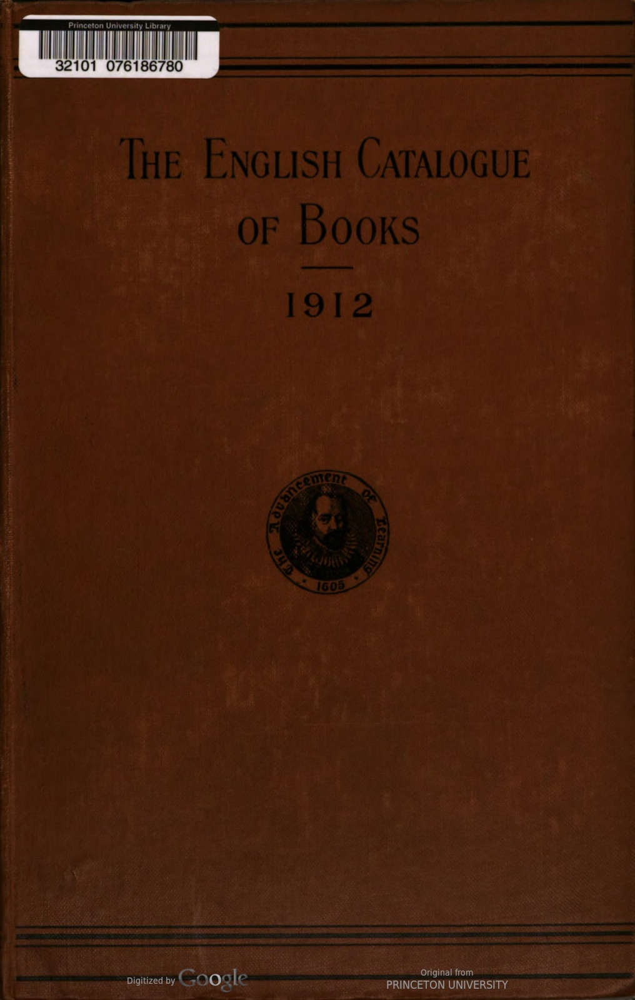
Data Table
1913
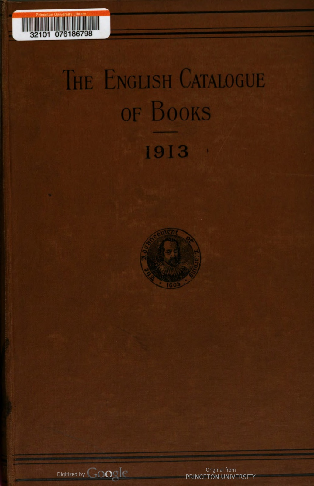
Data Table
| original_entry | page_num | doc_page_num | opening_bits | author(s) | title | format | little_bits | publisher | date | flagged | catalogue_year | |
|---|---|---|---|---|---|---|---|---|---|---|---|---|
| 0 | Aborigines of S. America, Church (G. E.) ios, 6d. net. About Edmond)-L'Homine à l'oreille Cassée. Cr. 8vo., IS. 6d..... ...RIVINGTON, May 13 | 1.0 | 9 | Aborigines of S. America, Church (G. E.) ios, 6d. net. | About Edmond) | L'Homine à l'oreille Cassée. | Cr. 8vo. | IS. 6d..... ... | RIVINGTONS | May 13 | False | 1913 |
| 1 | About (Edmond)--Le Nez d'un notaire. 12mo., pp. 252, Is, net. ......NELSON, Feb. 13 | 1.0 | 9 | NaN | About (Edmond) | Le Nez d'un notaire. | 12mo. | pp. 252, Is, net. ...... | NELSON | Feb. 13 | False | 1913 |
| 2 | Abbott (P.)-Exercises in arithmetic and mensu- ration. With diagrams. Cr. 8vo. 71 X41, pp. 534, 35. 6d. .LONGMANS, Oct. 13 | 1.0 | 9 | NaN | Abbott (P.) | Exercises in arithmetic and mensu- ration. With diagrams. | Cr. 8vo. | 71 X41, pp. 534, 35. 6d. . | LONGMANS | Oct. 13 | False | 1913 |
| 3 | A B C fiscal handbook (The). 3rd edit. 8vo. 81 X5, pp. 262, Is, net FREE TRADE UNION, Jan. 13 | 1.0 | 9 | NaN | NaN | A B C fiscal handbook (The). 3rd edit. | 8vo. | 81 X5, pp. 262, Is, net | FREE TRADE UNION | Jan. 13 | False | 1913 |
| 4 | A B C guide to patents for inventors. 8vo. 25. 6d. net. BUTTERWORTH, Apr. 13 | 1.0 | 9 | NaN | NaN | A B C guide to patents for inventors. | 8vo. | 25. 6d. net. | BUTTERWORTH | Apr. 13 | False | 1913 |
| 5 | Abercrombie (Lascelles) --Speculative dialogues Cr. 8vo. 73 X5, pp. 204, 5s. net M. SOCKER, Oct. 13 | 1.0 | 9 | NaN | Abercrombie (Lascelles) | Speculative dialogues | Cr. 8vo. | 73 X5, pp. 204, 5s. net | M. SECKER | Oct. 13 | False | 1913 |
| 6 | Abney (Sir William de W.)-Researches in colour vision and the trichromatic theory. 8vo. 9X58, pp. 432, 213, net....LONGMANS, Jan. 13 | 1.0 | 9 | NaN | Abney (Sir William de W.) | Researches in colour vision and the trichromatic theory. | 8vo. | 9X58, pp. 432, 213, net.... | LONGMANS | Jan. 13 | False | 1913 |
| 7 | Abraham (Ashley P.)-Some portraits of the Lake poets and their honies. Illus. Ryl. 8vo. 94 X6, pp. 56, bds. 35. 6d. net SIMPKIN, Aug. 13 | 1.0 | 9 | NaN | Abraham (Ashley P.) | Some portraits of the Lake poets and their honies. Illus. | Ryl. 8vo. | 94 X6, pp. 56, bds. 35. 6d. net | SIMPKIN | Aug. 13 | False | 1913 |
| 8 | Abraham (George D.)-Motor ways in lakeland. 8vo. 9 X5), pp. 320, 7s. 6d. net METHUEN, Aug. 13 | 1.0 | 9 | NaN | Abraham (George D.) | Motor ways in lakeland. | 8vo. | 9 X5), pp. 320, 7s. 6d. net | METHUEN | Aug. 13 | False | 1913 |
| 9 | Abraham (J. Johnston)-The Surgeon's log : impressions of the Far Fast. Re-issue. Cr. 8vo. 74 X5, pp. 316, 25. 6d. net CHAPMAN & H., June 13 | 1.0 | 9 | NaN | Abraham (J. Johnston) | The Surgeon's log : impressions of the Far Fast. Re-issue. | Cr. 8vo. | 74 X5, pp. 316, 25. 6d. net | CHAPMAN & H. | June 13 | False | 1913 |
| 10 | Abraham (K.)—Steam economy in the sugar factory. Trans. from the German edit. by E. J. Bayle. Cr. 8vo., 6s. 6d. net CHAPMAN & H., Jan, 13 | 1.0 | 9 | NaN | Abraham (K.) | Steam economy in the sugar factory. Trans. from the German edit. by E. J. Bayle. | Cr. 8vo. | 6s. 6d. net | CHAPMAN & H. | Jan. 13 | False | 1913 |
| 11 | Abramowski (O. L. M.)— Eating for health. 3rd edit. Cr. 8vo., 38. 6d. net W. SCOTT, Aug. 13 | 1.0 | 9 | NaN | Abramowski (O. L. M.) | Eating for health. 3rd edit. | Cr. 8vo. | 38. 6d. net | W. SCOTT | Aug. 13 | False | 1913 |
| 12 | Academy Architecture and Architectural Review, 1913. Vol. 43. Edit. by Alex. Koch. 4to. 45. rod. net, swd. 45. net.. SIMPKIN, June 13 | 1.0 | 9 | NaN | NaN | Academy Architecture and Architectural Review, 1913. Vol. 43. Edit. by Alex. Koch. | 4to. | 45. rod. net, swd. 45. net.. | SIMPKIN | June 13 | False | 1913 |
| 13 | Accountancy for retail traders, Wood (D.) 25. 6d. net... Accountants' (Incorporated) Year book. 8vo. 71 x 41, pp. 782, 25. ...SOCIETY, Oct. 13 | 1.0 | 9 | NaN | NaN | Accountancy for retail traders, Wood (D.) 25. 6d. net... Accountants' (Incorporated) Year book. | 8vo. | 71 x 41, pp. 782, 25. ... | SOCIETY | Oct. 13 | False | 1913 |
| 14 | Accountants (Institute of Chartered) in England and Wales.-List of members, 1913, Royal Charter, and bye-laws. 8vo. 71 X 5, pp. 780, 25. GEE, Oct. 13 | 1.0 | 9 | NaN | NaN | Accountants (Institute of Chartered) in England and Wales.-List of members, 1913, Royal Charter, and bye-laws. | 8vo. | 71 X 5, pp. 780, 25. | GEE | Oct. 13 | False | 1913 |
1914
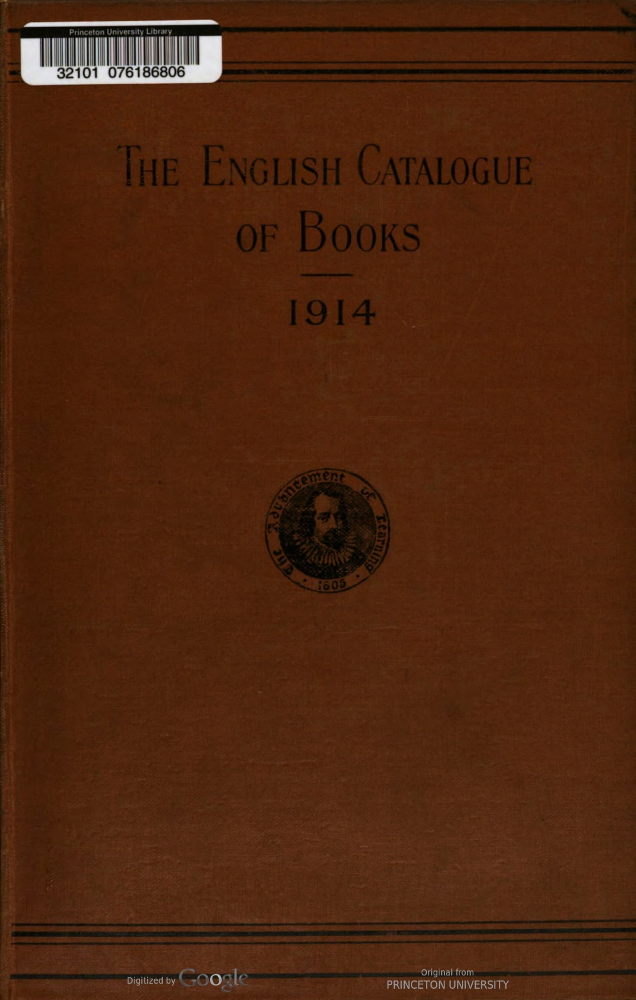
Data Table
| original_entry | page_num | doc_page_num | opening_bits | author(s) | title | format | little_bits | publisher | date | flagged | catalogue_year | |
|---|---|---|---|---|---|---|---|---|---|---|---|---|
| 0 | "A. L.” Welcome readers (The). Book Illa. 4to. 9d. net .E. J. ARNOLD, Aug. 14 | 1.0 | 9 | NaN | “A. L.” | Welcome readers (The). Book Illa. | 4to. | 9d. net . | E. ARNOLD | Aug. 14 | False | 1914 |
| 1 | "A.L." Welcome readers (The). Books 4A & 5A. 4to, ea. rod. net .E. J. ARNOLD, Sep. 14 | 1.0 | 9 | NaN | A.L. | Welcome readers (The). Books 4A & 5A. | 4to, | ea. rod. net . | E. ARNOLD | Sep. 14 | False | 1914 |
| 2 | Abbey (John)—The Word of God and the use of intoxicating liquor. 2nd edit., enlarged. Cr. 8vo. 8} x 51, pp. 160, Is. net (37, Thorncliffe Rd., Oxford) AUTHOR, July 14 | 1.0 | 9 | NaN | Abbey (John) | The Word of God and the use of intoxicating liquor. 2nd edit., enlarged. | Cr. 8vo. | 8} x 51, pp. 160, Is. net (37, Thorncliffe Rd., Oxford) | AUTHOR | July 14 | False | 1914 |
| 3 | Abbot (Allen)-The Theorist : a novel. Cr. 8vo. 73x44, pp. 320, 6s. ..A. MELROSE, May 14 | 1.0 | 9 | NaN | Abbot (Allen) | The Theorist : a novel. | Cr. 8vo. | 73x44, pp. 320, 6s. .. | A. MELROSE | May 14 | False | 1914 |
| 4 | Abbott (Edwin A.)—The Fourfold gospel. Section II., The Beginning. 8vo. 9X5}, pp. 480, 125. éd. net CAMB. UNIV. PRESS, Feb. 14 | 1.0 | 9 | NaN | Abbott (Edwin A.) | The Fourfold gospel. Section II., The Beginning. | 8vo. | 9X5}, pp. 480, 125. éd. net | CAMB. UNIV. PR. | Feb. 14 | False | 1914 |
| 5 | Abbott (Eleanor Hallowell) — The White linen Cr. 8vo. 73 X5, pp. 284, 6s. HODDER & S., Feb. 14 | 1.0 | 9 | NaN | Abbott (Eleanor Hallowell) | The White linen | Cr. 8vo. | 73 X5, pp. 284, 6s. | HODDER & S. | Feb. 14 | False | 1914 |
| 6 | Abbott (H. W.)--Vision : a book of lyrics. Cr. 8vo., 28. 6d. net ... E. MATHEWS, May 14 | 1.0 | 9 | NaN | Abbott (H. W.) | Vision : a book of lyrics. | Cr. 8vo. | 28. 6d. net ... | E. MATHEWS | May 14 | False | 1914 |
| 7 | Abbott (J. F.)—The Elementary pr'nciples of general biology. Cr. 8vo., 6s. 6d. net MACMILLAN, Mar. 14 | 1.0 | 9 | NaN | Abbott (J. F.) | The Elementary pr'nciples of general biology. | Cr. 8vo. | 6s. 6d. net | MACMILLAN | Mar. 14 | False | 1914 |
| 8 | Abbott (Willis J.)-Notable women in history. Illus. 8vo. 9} x 58, pp. 450, 16s. net GREENING, Mar. 14 | 1.0 | 9 | NaN | Abbott (Willis J.) | Notable women in history. | 8vo. | Illus. 9} x 58, pp. 450, 16s. net | GREENING | Mar. 14 | False | 1914 |
| 9 | Abderhalden (Emil)--Defensive ferments of the animal organism. 3rd enlarged edit. Cr. 8vo 71 X 5, pp. 262, 75. 6d. net .BALE, Apr. 14 | 1.0 | 9 | NaN | Abderhalden (Emil) | Defensive ferments of the animal organism. 3rd enlarged edit. | Cr. 8vo | 71 X 5, pp. 262, 75. 6d. net . | BALE | Apr. 14 | False | 1914 |
| 10 | Abdur Rahman-Eine kritische Profung der Quellen des Islamitischen Rechts : sources of Muslim law. Ryl. 8vo. 101 x 71, pp. 236, 21s. net MILFORD, July 14 | 1.0 | 9 | NaN | Abdur Rahman | Eine kritische Profung der Quellen des Islamitischen Rechts : sources of Muslim law. | Ryl. 8vo. | 101 x 71, pp. 236, 21s. net | MILFORD | July 14 | False | 1914 |
| 11 | Abell (Francis)-Prisoners of war in Britain 1765 to 1815: a record of their lives, their romance and their sufferings. Illus. 8vo. 9: X5, pp. 472, 155. net.... MILFORD, Nov. 14 | 1.0 | 9 | NaN | Abell (Francis) | Prisoners of war in Britain 1765 to 1815: a record of their lives, their romance and their sufferings. | 8vo. | Illus. 9: X5, pp. 472, 155. net.... | MILFORD | Nov. 14 | False | 1914 |
| 12 | Abercrombie (Lascelles)— The Epic. 12mo., pp. 96, is, net. (Art and craft of letters) M. SECKER, May 14 | 1.0 | 9 | NaN | Abercrombie (Lascelles) | The Epic. | 12mo. | pp. 96, is, net. (Art and craft of letters) | M. SECKER | May 14 | False | 1914 |
| 13 | Abraham (Ashley P.)-Beautiful north Wales. Illus. 4to. I1X8}, pp. 52, bds, 3s. 6d. net AUTHOR, May 14 | 1.0 | 9 | NaN | Abraham (Ashley P.) | Beautiful north Wales. Illus. | 4to. | I1X8}, pp. 52, bds, 3s. 6d. net | AUTHOR | May 14 | False | 1914 |
| 14 | Abraham (J. Johnston)—The Night nurse. New and cheaper edit. Cr. 8vo. 7} 4, pp. 322, 29. net CHAPMAN & H., Sep. 14 | 1.0 | 9 | NaN | Abraham (J. Johnston) | The Night nurse. New and cheaper edit. | Cr. 8vo. | 7} 4, pp. 322, 29. net | CHAPMAN & H. | Sep. 14 | False | 1914 |
1915
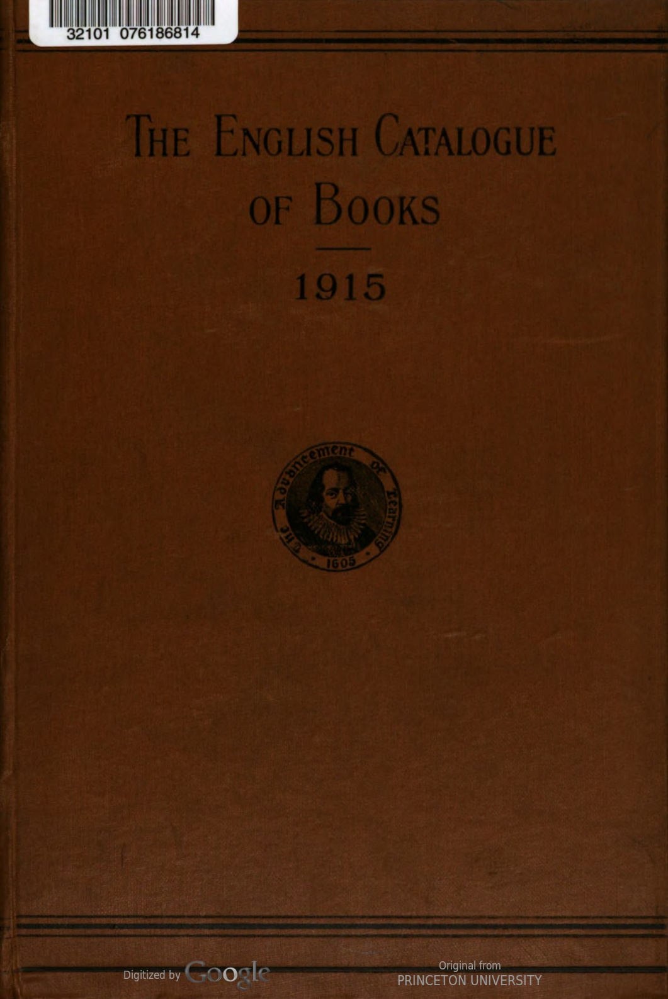
Data Table
| original_entry | page_num | doc_page_num | opening_bits | author(s) | title | format | little_bits | publisher | date | flagged | catalogue_year | |
|---|---|---|---|---|---|---|---|---|---|---|---|---|
| 0 | A B C of income tax return making. By a Lay- man. 8vo., pp. 80, 28. 6d. net (Bradford : 7a, Guy's Cliff) AUTHOR, June 15 | 1.0 | 9 | NaN | NaN | A B C of income tax return making. By a Lay- man. | 8vo. | pp. 80, 28. 6d. net (Bradford : 7a, Guy's Cliff) | AUTHOR | June 15 | False | 1915 |
| 1 | A B C of housekeeping, Herrick (c. T.) 25. net | NaN | ADDED | NaN | NaN | A B C of housekeeping, Herrick (c. T.) | NaN | 25. net | NaN | NaN | False | 1915 |
| 2 | ABC of Jolly Jack. 4to. bds. Is. net GALE & P., Oct. 15 | 1.0 | 9 | NaN | NaN | ABC of Jolly Jack. | 4to. | bds. Is. net | GALE & P. | Oct. 15 | False | 1915 |
| 3 | ABC of our soldiers. 4to., bds. is. net GALE & P., Nov. 15 | 1.0 | 9 | NaN | NaN | ABC of our soldiers. | 4to., | bds. is. net | GALE & P. | Nov. 15 | False | 1915 |
| 4 | Abady (Jacques)-Clauses and precedents in electricity, gas and water legislation. 8vo., pp. 383, 155. net ..........W. KING, Mar. 15 | 1.0 | 9 | NaN | Abady (Jacques) | Clauses and precedents in electricity, gas and water legislation. | 8vo. | pp. 383, 155. net .......... | F. KING | Mar. 15 | False | 1915 |
| 5 | Abbott (Edwin A.)—The Fourfold Gospel. Sect. 3, The Proclamation of the New Kingdom. Demy 8vo., pp. 572, 125. 6d. net CAMB. UNIV. PR., Mar. 15 | 1.0 | 9 | NaN | Abbott (Edwin A.) | The Fourfold Gospel. Sect. 3, The Proclamation of the New Kingdom. | Demy 8vo. | pp. 572, 125. 6d. net | CAMB. UNIV. PR. | Mar. 15 | False | 1915 |
| 6 | Abbott (Edwin A.)-Miscellanea Evangelica. II, Christ's miracles of feeding. 8vo. 33. net CAMB, UNIV. PR., Aug. 15 | 1.0 | 9 | NaN | Abbott (Edwin A.) | Miscellanea Evangelica. II, Christ's miracles of feeding. | 8vo. | 33. net | CAMB. UNIV. PR. | Aug. 15 | False | 1915 |
| 7 | Abbott (Lyman)--How shall we think of our dead ? 18mo., pp. 24, swd. 6d. net MELROSE, Oct. 15 | 1.0 | 9 | NaN | Abbott (Lyman) | How shall we think of our dead ? | 18mo. | pp. 24, swd. 6d. net | MELROSE | Oct. 15 | False | 1915 |
| 8 | Abbott (Maude) ed.-Descriptive catalogue of the Medical Museum of McGill University arranged on a modified Decimal system of museum classification. Pt. 4, sec. 1, The Hæmopoietic organs. Catalogue and didactic intro., by 0. C. Gruner. Ryl. 8vo. 98 x 6], pp. 204, ios. 6d. net (Clarendon Pr.) MILFORD, July 15 | 1.0 | 9 | NaN | Abbott (Maude) ed. | Descriptive catalogue of the Medical Museum of McGill University arranged on a modified Decimal system of museum classification. Pt. 4, sec. 1, The Hæmopoietic organs. Catalogue and didactic intro., by 0. C. Gruner. | Ryl. 8vo. | 98 x 6], pp. 204, ios. 6d. net | (Clarendon Pr.) MILFORD | July 15 | False | 1915 |
| 9 | Abbott (P.)-Exercises in arithmetic and men- suration. Cr. 8vo., 38. 6d. w. answ. 45. 60. LONGMANS, Jan. 15 | 1.0 | 9 | NaN | Abbott (P.) | Exercises in arithmetic and men- suration. | Cr. 8vo. | 38. 6d. w. answ. 45. 60. | LONGMANS | Jan. 15 | False | 1915 |
| 10 | Abbott (P.)- Exercises in arithmetic and mensu- ration. Re-issue. Sect. I and 2. Cr. 8vo. ea. 2s. LONGMANS, Apr. 15 | 1.0 | 9 | NaN | Abbott (P.) | Exercises in arithmetic and mensu- ration. Re-issue. Sect. I and 2. | Cr. 8vo. | ea. 2s. | LONGMANS | Apr. 15 | False | 1915 |
| 11 | Abbott (w.)-Commercial theory and practice. Cr. 8vo. 7*5, pp. 360, 3s. 6d. MURRAY, Oct. 15 | 1.0 | 9 | NaN | Abbott (w.) | Commercial theory and practice. | Cr. 8vo. | 7*5, pp. 360, 3s. 6d. | MURRAY | Oct. 15 | False | 1915 |
| 12 | Abdul Baha.-Talks by A. B., given in Paris, 2nd edit., with additions. Cr. 8vo. 71 x 5, pp. 174, 28. 6d. net ....BELL, Apr. 15 | 1.0 | 9 | NaN | Abdul Baha. | Talks by A. B., given in Paris, 2nd edit., with additions. | Cr. 8vo. | 71 x 5, pp. 174, 28. 6d. net .... | BELL | Apr. 15 | False | 1915 |
| 13 | Abel (George) -Wylins fae my wallet. Foreword by Prof. Stalker. With glossary. 8vo. 84 x 61, pp. 150, 28. 6d. net .....GARDNER, Dec. 15 | 1.0 | 9 | NaN | Abel (George) | Wylins fae my wallet. Foreword by Prof. Stalker. With glossary. | 8vo. | 84 x 61, pp. 150, 28. 6d. net ..... | GARDNER, D. | Dec. 15 | False | 1915 |
| 14 | Aberdeen (Univ. of)-Annual report on the state of finances. 5d. ... WYMAN, June 15 | 1.0 | 9 | NaN | NaN | Aberdeen (Univ. of)-Annual report on the state of finances. | NaN | 5d. ... | WYMAN | June 15 | False | 1915 |
1916
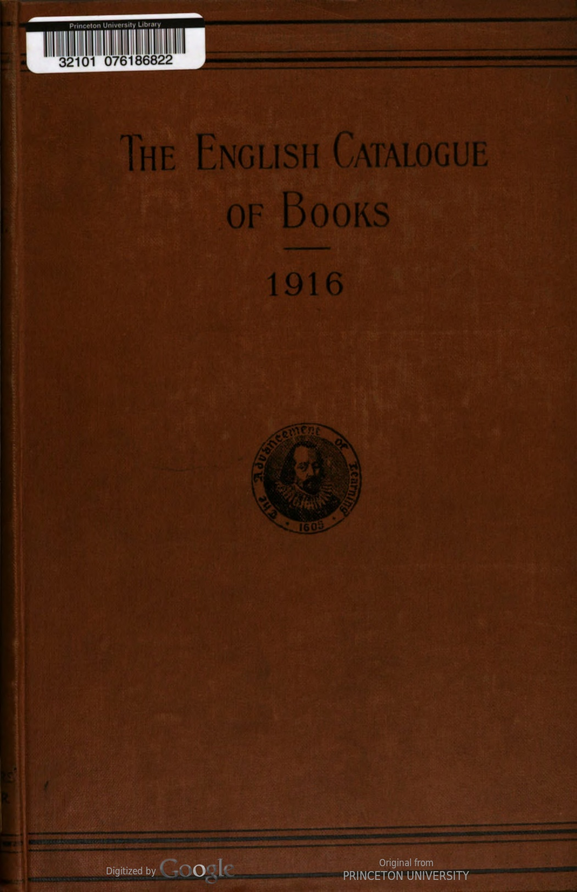
Data Table
| original_entry | page_num | doc_page_num | opening_bits | author(s) | title | format | little_bits | publisher | date | flagged | catalogue_year | |
|---|---|---|---|---|---|---|---|---|---|---|---|---|
| 0 | А A B C. Obl. 4to. 114x84, linen 38. 6d. net, ed. de luxe 5s. net; swd. is. net. (" Geographia' Brit. picture bks.) ..GEOGRAPHIA, Dec. 16 | 1.0 | 9 | А | NaN | A B C. | Obl. 4to. | 114x84, linen 38. 6d. net, ed. de luxe 5s. net; swd. is. net. (" Geographia' Brit. picture bks.) .. | GEOGRAPHIA | Dec. 16 | False | 1916 |
| 1 | A B C guide for attested and unattested. 32mo. 4*X3, swd. id.............LARBY, June 16 | 1.0 | 9 | NaN | NaN | A B C guide for attested and unattested. | 32mo. | 4*X3, swd. id............. | LARBY | June 16 | False | 1916 |
| 2 | A B C guide to London, 1916. Cr. 8vo. 64 x 48, swd. 4d. .LARBY, Aug. 16 | 1.0 | 9 | NaN | NaN | A B C guide to London, 1916. | Cr. 8vo. | 64 x 48, swd. 4d. . | LARBY | Aug. 16 | False | 1916 |
| 3 | A B C of banking (The). By “L. S. D.” Cr. 8vo. 74 X 5, pp. 150, 28. 6d. net BARNICOTT & P., Jan. 16 | 1.0 | 9 | NaN | NaN | A B C of banking (The). By “L. S. D.” | Cr. 8vo. | 74 X 5, pp. 150, 28. 6d. net | BARNICOTT & PEARCE | Jan. 16 | False | 1916 |
| 4 | "A. L." Bright story readers. Grade 3. Cr. 8vo. 71 x 57, pp. 63, swd. 3d. E. J. ARNOLD, July 16 | 1.0 | 9 | NaN | NaN | "A. L." Bright story readers. Grade 3. | Cr. 8vo. | 71 x 57, pp. 63, swd. 3d. | E. ARNOLD | July 16 | False | 1916 |
| 5 | "A. L." Bright story readers. No. 116, The Nightingale and the bottle neck. Cr. 8vo. 77 x 51, pp. 32, swd, 2d. E. J. ARNOLD, Aug. 16 | 1.0 | 9 | NaN | “A. L.” | Bright story readers. No. 116, The Nightingale and the bottle neck. | Cr. 8vo. | 77 x 51, pp. 32, swd, 2d. | E. ARNOLD | Aug. 16 | False | 1916 |
| 6 | Abbot (Charles Greeley)-Arequipa pyrhelio- metry. 8vo. 98 x64, pp. 24, is. net. (Smith- sonian Coll.) .WESLEY, Oct. 16 | 1.0 | 9 | NaN | Abbot (Charles Greeley) | Arequipa pyrhelio- metry. | 8vo. | 98 x64, pp. 24, is. net. (Smith- sonian Coll.) | WESLEY | Oct. 16 | False | 1916 |
| 7 | Abbot (Charles Greeley) and others On the distribution of radiation over the sun's disk and new evidences of the solar variability. ipl. 8vo. 93 X64, pp. 24, swd. is. 6d. net. (Smith- sonian Coll.) .. WESLEY, Oct. 16 | 1.0 | 9 | NaN | Abbot (Charles Greeley) and others | On the distribution of radiation over the sun's disk and new evidences of the solar variability. | ipl. 8vo. | 93 X64, pp. 24, swd. is. 6d. net. (Smith- sonian Coll.) | WESLEY | Oct. 16 | False | 1916 |
| 8 | Abbott (Edwin A.)-Diatessarica : Part 10, The Fourfold gospel ; Section 4. The Law of the new kingdom. 8vo. 9 5, 125. 6d. net CAMB. UNIV. PR., Mar. 16 | 1.0 | 9 | NaN | Abbott (Edwin A.) | Diatessarica : Part 10, The Fourfold gospel ; Section 4. The Law of the new kingdom. | 8vo. | 9 5, 125. 6d. net | CAMB. UNIV. PR. | Mar. 16 | False | 1916 |
| 9 | Abbott (James Francis)- Japanese expansion and American policies. Cr. 8vo. 78 x 58, 6s. 6d. net (N. Y.) MACMILLAN, Feb. 16 | 1.0 | 9 | NaN | Abbott (James Francis) | Japanese expansion and American policies. | Cr. 8vo. | 78 x 58, 6s. 6d. net (N. Y.) | MACMILLAN | Feb. 16 | False | 1916 |
| 10 | Abbott (Lyman)--Reminiscences. Illus. 8vo. 9x6, pp. 528, 155. net.. CONSTABLE, Feb. 16 | 1.0 | 9 | NaN | Abbott (Lyman) | Reminiscences. Illus. | 8vo. | 9x6, pp. 528, 155. net.. | CONSTABLE | Feb. 16 | False | 1916 |
| 11 | Abbott-Brown (C., Maj.)---How to do it: the A.S.C. subaltern's and N.C.O.'s vade mecum ; also applic. for cavalry, artillery, engineers ard infantry. 44 X 31, pp. 97, is. net F. GROOM, Aug. 16 | 1.0 | 9 | NaN | Abbott-Brown (C., Maj.) | How to do it: the A.S.C. subaltern's and N.C.O.'s vade mecum ; also applic. for cavalry, artillery, engineers ard infantry. | NaN | 44 X 31, pp. 97, is. net | F. GROOM | Aug. 16 | False | 1916 |
| 12 | Abdullah (Achmed)-The Red stain: a story of mystery and crime. Cr. 8vo. 74 X 5, pp. 309, 6s. SIMPKIN, Sep. 16 | 1.0 | 9 | NaN | Abdullah (Achmed) | The Red stain: a story of mystery and crime. | Cr. 8vo. | 74 X 5, pp. 309, 6s. | SIMPKIN | Sep. 16 | False | 1916 |
| 13 | Accounts (Public), Ctte. of, 1916—Memo. by Comptroller and Auditor-Gen. for inform. of, rid. ... WYMAN, Sept. 16 | 1.0 | 9 | NaN | NaN | Accounts (Public), Ctte. of, 1916—Memo. by Comptroller and Auditor-Gen. for inform. of, rid. ... | NaN | NaN | WYMAN | Sep. 16 | False | 1916 |
| 14 | Acland (Mrs. Arthur H. D.)-Child training. Cr. 8vo. 71 x 5, pp. 179, Is. net SIDGWICK & J., Oct. 16 | 2.0 | 10 | NaN | Acland (Mrs. Arthur H. D.) | Child training. | Cr. 8vo. | 71 x 5, pp. 179, Is. net | SIDGWICK & J. | Oct. 16 | False | 1916 |
1917
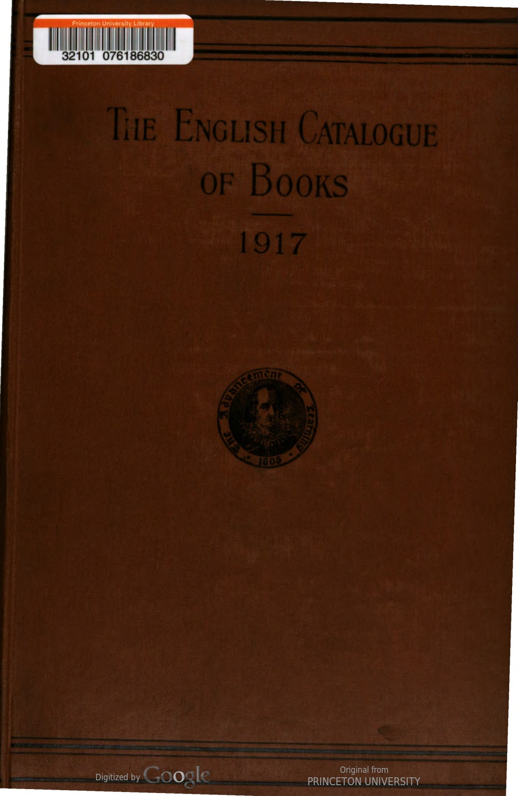
Data Table
| original_entry | page_num | doc_page_num | opening_bits | author(s) | title | format | little_bits | publisher | date | flagged | catalogue_year | |
|---|---|---|---|---|---|---|---|---|---|---|---|---|
| 0 | A B Ceasel painting box (The). Is. net FROWDE AND H. & S., Nov. '17 | 1.0 | 9 | NaN | NaN | A B Ceasel painting box (The). | NaN | Is. net | FROWDE AND H. & S. | Nov. 17 | False | 1917 |
| 1 | A B C guide to health resorts served by the Great Central Railway, 1917. 8vo. 84 x 58, pp. 441, IS. W. HILL, Aug. '17 | 1.0 | 9 | NaN | NaN | A B C guide to health resorts served by the Great Central Railway, 1917. | 8vo. | 84 x 58, pp. 441, IS. | W. HILL | Aug. 17 | False | 1917 |
| 2 | " A.L." Table book (The): weights and meas- ures and metric system. 18mo. 54 x 44, pp. .E. J. ARNOLD, Aug. '17 | 1.0 | 9 | NaN | NaN | " A.L." Table book (The): weights and meas- ures and metric system. | 18mo. | 54 x 44, pp. . | E. ARNOLD | Aug. 17 | False | 1917 |
| 3 | " A.L." Welcome readers. Preparatory book A. Cr. 8vo. 71% 5, pp. 76, 6d. net E. J. ARNOLD, Sep. '17 | 1.0 | 9 | NaN | “ A.L.” | Welcome readers. Preparatory book A. | Cr. 8vo. | 71% 5, pp. 76, 6d. net | E. ARNOLD | Sep. 17 | False | 1917 |
| 4 | " A.S.O.T.P." See P. (A.S.O.T.) Aaronsohn (Alexander)-With the Turks in Palestine. Cr. 8vo. 71 x 5, pp. 125, 25. net CONSTABLE, Apr. 17 | 1.0 | 9 | " A.S.O.T.P." See P. (A.S.O.T.) | Aaronsohn (Alexander) | With the Turks in Palestine. | Cr. 8vo. | 71 x 5, pp. 125, 25. net | CONSTABLE | Apr. 17 | False | 1917 |
| 5 | Abbott (E.) and Breckinridge (S. P.)-Truancy and non-attendance in the Chicago schools : a study of the social aspects of the compulsory education and child labor legislation of Illinois. Cr. 8vo. 8 X 5), pp. 488, 9s. net CAMB. UNIV. PR., Apr. 17 | 1.0 | 9 | NaN | Abbott (E.) and Breckinridge (S. P.) | Truancy and non-attendance in the Chicago schools : a study of the social aspects of the compulsory education and child labor legislation of Illinois. | Cr. 8vo. | 8 X 5), pp. 488, 9s. net | CAMB. UNIV. PR. | Apr. 17 | False | 1917 |
| 6 | Abbott (Edwin A.)-The Fourfold Gospel. Sect. V, The Founding of the New Kingdom; or, Life reached through death. (Diatessarica. Pt. X, sect. V. The completion of the work.] Demy 8vo. 74x59, pp. 832, 16s. 6d. net CAMB. UNIV. PR., Sep. '17 | 1.0 | 9 | NaN | Abbott (Edwin A.) | The Fourfold Gospel. Sect. V, The Founding of the New Kingdom; or, Life reached through death. (Diatessarica. Pt. X, sect. V. The completion of the work.] | Demy 8vo. | 74x59, pp. 832, 16s. 6d. net | CAMB. UNIV. PR. | Sep. 17 | False | 1917 |
| 7 | Abbott (Eleanor Hallowell)--Little Eve Edgarton. Cr. 8vo. 73 x 44, pp. 248, is. net HODDER & S., Jan. 17 | 1.0 | 9 | NaN | Abbott (Eleanor Hallowell) | Little Eve Edgarton. | Cr. 8vo. | 73 x 44, pp. 248, is. net | HODDER & S. | Jan. 17 | False | 1917 |
| 8 | Abraham (J. Johnston)-The Night nurse. New and cheaper ed. Cr. 8vo. 7X41, pp. 311, 18. net CHAPMAN & H., Jan, 17 | 1.0 | 9 | NaN | Abraham (J. Johnston) | The Night nurse. New and cheaper ed. | Cr. 8vo. | 7X41, pp. 311, 18. net | CHAPMAN & H. | Jan. 17 | False | 1917 |
| 9 | Abrahams (I.)-Studies in Pharisaism and the Gospels. Demy 8vo. 81 x 51, pp. 188, 6s. 6d. net... CAMB. UNIV. PR., May 17 | 1.0 | 9 | NaN | Abrahams (I.) | Studies in Pharisaism and the Gospels. | Demy 8vo. | 81 x 51, pp. 188, 6s. 6d. net... | CAMB. UNIV. PR. | May 17 | False | 1917 |
| 10 | Accounts (Public) Ctte. of-Index and Digest of evidence, Session 1916. 4d. .. WYMAN, Jan. 17 | 1.0 | 9 | NaN | NaN | Accounts (Public) Ctte. of-Index and Digest of evidence, Session 1916. | NaN | 4d. .. | WYMAN | Jan. 17 | False | 1917 |
| 11 | Accounts (Public) Ctte.-Report, 2d. ; do., w. proc., minutes of evid. and appen., 25. H.M. STATIONERY OFF., Aug.'17 | 1.0 | 9 | NaN | NaN | Accounts (Public) Ctte.-Report, 2d. ; do., w. proc., minutes of evid. and appen., 25. | NaN | NaN | H.M. STATIONERY OFF. | Aug. 17 | False | 1917 |
| 12 | Achărya (Sri Ananda)-Brahmadarsanam; or, Intuition of the absolute : being an intro. to the study of Hindu philosophy. Cr. 8vo. 74 x 5, pp. 222, 45. 6d. net ......MACMILLAN, Sep. '17 | 1.0 | 9 | NaN | Achărya (Sri Ananda) | Brahmadarsanam; or, Intuition of the absolute : being an intro. to the study of Hindu philosophy. | Cr. 8vo. | 74 x 5, pp. 222, 45. 6d. net ...... | MACMILLAN | Sep. 17 | False | 1917 |
| 13 | Achilles Tatius. With an Eng. tr. by S. Gaselee. 18mo. 61 X41. pp. 461, 5s, net, Ithr. 6s. 6d. net (Locb classical“lib.) ..HEINEMANN, May 17 | 1.0 | 9 | NaN | Achilles Tatius. | With an Eng. tr. by S. Gaselee. | 18mo. | 61 X41. pp. 461, 5s, net, Ithr. 6s. 6d. net (Locb classical“lib.) | HEINEMANN | May 17 | False | 1917 |
| 14 | Ackerley (Fred G.)-A Rumanian manual for self-tuition. Cr. 8vo. 71 x 5, pp. 145, 25. net K. PAUL, Mar. 17 | 1.0 | 9 | NaN | Ackerley (Fred G.) | A Rumanian manual for self-tuition. | Cr. 8vo. | 71 x 5, pp. 145, 25. net | K. PAUL | Mar. 17 | False | 1917 |
1918
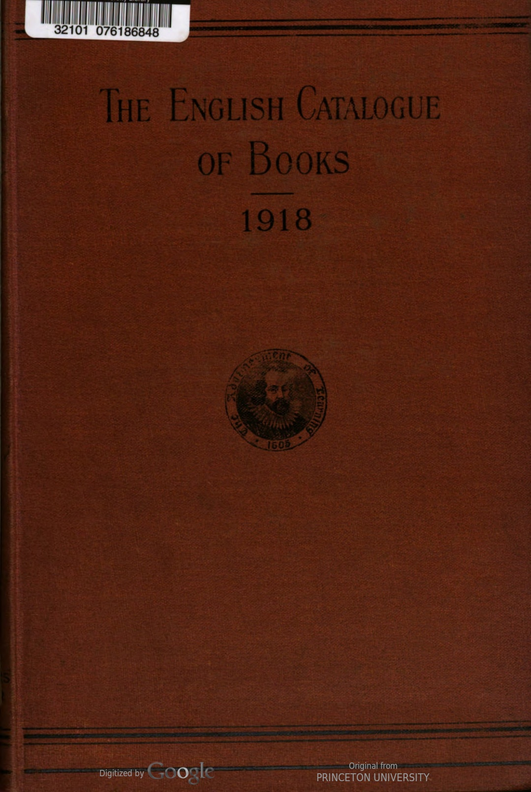
Data Table
| original_entry | page_num | doc_page_num | opening_bits | author(s) | title | format | little_bits | publisher | date | flagged | catalogue_year | |
|---|---|---|---|---|---|---|---|---|---|---|---|---|
| 0 | A. H." See H. (A.) A. P." See P. (A.) Abadie (J.)- Uounds of the abdomen. Pref. hs J.L. Faure. Ed., w. pref., by Sir W'. Arbutlinot Lane. Cr. *vo. 7} X 5, pp. 289, 7s. 6d. net (Military melical manvals) UNIV. CF LONDON PR., A pr.'18 | 1.0 | 17.0 | A. H." See H. (A.) A. P." See P. (A.) | Abadie (J.) | Uounds of the abdomen. Pref. hs J.L. Faure. Ed., w. pref., by Sir W'. Arbutlinot Lane. | Cr. *vo. | 7} X 5, pp. 289, 7s. 6d. net (Military melical manvals) | UNIV. OF LONDON PR. | Apr. 18 | False | 1918 |
| 1 | Abbey (John) and others-God hath not decived the nation : being replies to the Report of the Committee appointed by the Archbi hep of Canterbury on Unfermented Win, thi Word of God, and the ure of intexicating liquor, &c. By J. A., Rev. W. St. Clair Tisdall, and Rev. John Newton Wright. 8 X 5, pp. 72, 15.(Orpington : “ The Maples,” Goddington Lane) J. ABBEY, Jan. '18 | 1.0 | 17.0 | NaN | Abbey (John) and others | God hath not decived the nation : being replies to the Report of the Committee appointed by the Archbi hep of Canterbury on Unfermented Win, thi Word of God, and the ure of intexicating liquor, &c. By J. A., Rev. W. St. Clair Tisdall, and Rev. John Newton Wright. | NaN | 8 X 5, pp. 72, 15.(Orpington : “ The Maples,” Goddington Lane) | J. ABBEY | Jan. 18 | False | 1918 |
| 2 | Abbeys and castles of Yorkshire, Waddington (F.) 28. ...Oct. 'is Abbot (Willis J.)-Aircraft and submarines : the story of the invention, development and present-day uses of war's newest weapons. Illus. 92x61, pp. 402, 155. net PUTNAM, June '18 | 1.0 | 17.0 | NaN | NaN | Abbeys and castles of Yorkshire, Waddington (F.) | NaN | 28. ... | NaN | Oct. 15 | False | 1918 |
| 3 | Abbeys and castles of Yorkshire, Waddington (F.) 28. ...Oct. 'is Abbot (Willis J.)-Aircraft and submarines : the story of the invention, development and present-day uses of war's newest weapons. Illus. 92x61, pp. 402, 155. net PUTNAM, June '18 | 1.0 | 17.0 | NaN | Abbot (Willis J.) | Aircraft and submarines : the story of the invention, development and present-day uses of war's newest weapons. Illus. | NaN | 92x61, pp. 402, 155. net | PUTNAM | June 18 | False | 1918 |
| 4 | Abbott (E. A., Rev.)" Righteousness" in the Gospels. Roy. 8vo. 91x67, pp 14, swd. is net ....(Brit. Academy) MILFORD, May '18 | 1.0 | 17.0 | NaN | Abbott (E. A., Rev.) | "Righteousness" in the Gospels. | Roy. 8vo. | 91x67, pp 14, swd. is net ....(Brit. Academy) | MILFORD | May 18 | False | 1918 |
| 5 | Abbott (E. C.)-The Science of health and home- making. Cr. 8vo. pp. 302, 35. 6d. net G. BELL, July '18 | 1.0 | 17.0 | NaN | Abbott (E. C.) | The Science of health and home- making. | Cr. 8vo. | pp. 302, 35. 6d. net | G. BELL | July 18 | False | 1918 |
| 6 | Abbott (E. W.)- The Colliery official's, work. man's and bill clerk's friend. 16mo. pp. 45 (South Shields : 49, Northcote St.) E. W. ABBOTT, Dec. '17 | 1.0 | 17.0 | NaN | Abbott (E. W.) | The Colliery official's, work. man's and bill clerk's friend. | 16mo. | pp. 45 (South Shields : 49, Northcote St.) | E. W. ABBOTT | Dec. 17 | False | 1918 |
| 7 | Abbott (P.)-Mathematical tables and formule. Cr. 8vo. 71 x 41, pp. 62, 2s. net. (Mod. mathe- matical ser.) ..LONGMANS, Nov. '18 | 1.0 | 17.0 | NaN | Abbott (P.) | Mathematical tables and formule. | Cr. 8vo. | 71 x 41, pp. 62, 2s. net. (Mod. mathe- matical ser.) | LONGMANS | Nov. 18 | False | 1918 |
| 8 | Abbott(P.)-Elementary numerical trigonome'ry. Cr. 8vo. 7** 4$, pp. 206, swd. 5s. net. (Mod. mathematical ser.). ...LONGMANS, Nov. '18 | 1.0 | 17.0 | NaN | Abbott(P.) | Elementary numerical trigonome'ry. | Cr. 8vo. | 7** 4$, pp. 206, swd. 5s. net. (Mod. mathematical ser.). | LONGMANS | Nov. 18 | False | 1918 |
| 9 | Academy. See Royul Academy. Academy Architecture and Architectural Review, 1917–1918. Ed. by Hugh W. Martin-Kaye. Ryl. 8vo. 98 x 71, pp. 115, wd 55. net "ACADEMY ARCHITECTURE” OFFICES, Alg. '18 | 1.0 | 17.0 | Academy. See Royul Academy. | NaN | Academy Architecture and Architectural Review, 1917–1918. Ed. by Hugh W. Martin-Kaye. | Ryl. 8vo. | 98 x 71, pp. 115, wd 55. net | "ACADEMY ARCHITECTURE” OFFICES | Alg. '18 | False | 1918 |
| 10 | Accounts (Pu' lic), Ctte. of - Index and lige: t of evidence, Session 1917. 311. H.M. STATIONERY (FF., Oct. '17 | 1.0 | 17.0 | NaN | NaN | Accounts (Pu' lic), Ctte. of - Index and lige: t of evidence, Session 1917. | NaN | 311. | H.M. STATIONERY OFF. | Oct. 17 | False | 1918 |
| 11 | Accounts (Public) atte. ---Report, 2d. H.M. STATIONERY OFF., Aug. '18 | 1.0 | 17.0 | NaN | NaN | Accounts (Public) atte. ---Report, 2d. | NaN | NaN | H.M. STATIONERY OFF. | Aug. 18 | False | 1918 |
| 12 | Acetylene-Cylin es: lut usuviu au inlue: report of Dept. Ctte. 25. H.M. STATIONERY (FF., J.'. '13 | 1.0 | 17.0 | NaN | NaN | Acetylene-Cylin es: lut usuviu au inlue: report of Dept. Ctte. | NaN | 25. | H.M. STATIONERY OFF. | J.'. '13 | False | 1918 |
| 13 | Achard (L. A. E.)-Belle-Rose. 8vo. pp. 564, IS, 6d. net . NELSON, Jan. '18 | 1.0 | 17.0 | NaN | Achard (L. A. E.) | Belle-Rose. | 8vo. | pp. 564, IS, 6d. net . | NELSON | Jan. 18 | False | 1918 |
| 14 | Acland (Mrs. Arthur H. D.)Queer beasts and magics : an experienced grandmother's tale for grandsons. Illus. by M. A. Acland and A. S. A." Cr. 8vo. 71 x 5, pp. 156, 35. 6d net ...SiDGWICK & J., Dec. '18 | 1.0 | 17.0 | NaN | Acland (Mrs. Arthur H. D.) | Queer beasts and magics : an experienced grandmother's tale for grandsons. Illus. by M. A. Acland and A. S. A." | Cr. 8vo. | 71 x 5, pp. 156, 35. 6d net ... | SIDGWICK & J. | Dec. 18 | False | 1918 |
1919
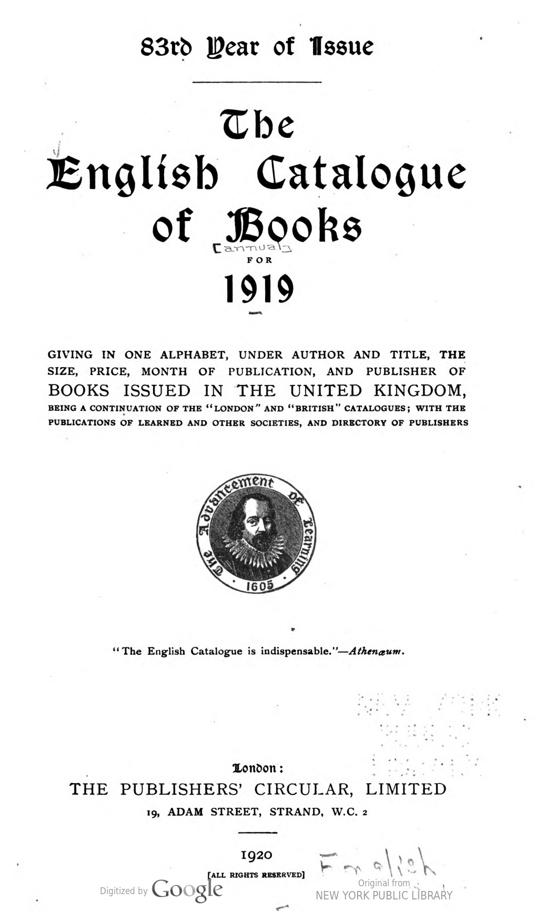
Data Table
| original_entry | page_num | doc_page_num | opening_bits | author(s) | title | format | little_bits | publisher | date | flagged | catalogue_year | |
|---|---|---|---|---|---|---|---|---|---|---|---|---|
| 0 | A B C Motor, marine, and aircraft guide, 1920 OFFICE, Apr. '19 | 1.0 | 13 | NaN | NaN | A B C Motor, marine, and aircraft guide, 1920 | NaN | NaN | OFFICE | Apr. 19 | False | 1919 |
| 1 | A B C of common birds (An). 18mo. 4×34, pp. 64, swd. 6d. .R.S.P.B., July '19 | 1.0 | 13 | NaN | NaN | A B C of common birds (An). | 18mo. | 4×34, pp. 64, swd. 6d. . | R.S.P.B. | July 19 | False | 1919 |
| 2 | A B C of etiquette (The). Cr. 8vo. 4×31, pp. 28, swd. is. net ..HARNDEN, Oct. '19 | 1.0 | 13 | NaN | NaN | A B C of etiquette (The). | Cr. 8vo. | 4×31, pp. 28, swd. is. net .. | HARNDEN | Oct. 19 | False | 1919 |
| 3 | "A. L." Nursery rhyme reader (The): a selection of 22 of the most popular nursery rhymes with Illus. for colouring. Cr. 8vo. 7×5, pp. 22, swd. 3d. net...(Leeds) E. J. ARNOLD, July '19 | 1.0 | 13 | NaN | A. L. | Nursery rhyme reader (The): a selection of 22 of the most popular nursery rhymes with Illus. for colouring. | Cr. 8vo. | 7×5, pp. 22, swd. 3d. net... | (Leeds) E. J. ARNOLD | July 19 | False | 1919 |
| 4 | "A. L." Print-writing copy books (The), No. 3 4to. 8x64, pp. 24, swd. 3d. net (Leeds) E. J. ARNOLD, July '19 | 1.0 | 13 | NaN | NaN | "A. L." Print-writing copy books (The), No. 3 | 4to. | 8x64, pp. 24, swd. 3d. net (Leeds) | E. ARNOLD | July 19 | False | 1919 |
| 5 | Abbot (Jane)-Keineth. Illus. by Harriet Roose- velt Richards. 5s. net..LIPPINCOTT, Mar. '19 | 1.0 | 13 | NaN | Abbot (Jane) | Keineth. Illus. by Harriet Roose- velt Richards. | NaN | 5s. net. | LIPPINCOTT | Mar. 19 | False | 1919 |
| 6 | Abbott (Eleanor Hallowell)-Love and Mrs. Kendrur. Cr. 8vo. 7 X4, pp. 116, 2s. net HEINEMANN, Oct. '19 | 1.0 | 13 | NaN | Abbott (Eleanor Hallowell) | Love and Mrs. Kendrur. | Cr. 8vo. | 7 X4, pp. 116, 2s. net | HEINEMANN | Oct. 19 | False | 1919 |
| 7 | Abbott (Eleanor Hallowell)-The Ne'er-do-much. Cr. 8vo. 7×5, pp. 156, 5s. net HODDER, July '19 | 1.0 | 13 | NaN | Abbott (Eleanor Hallowell) | The Ne'er-do-much. | Cr. 8vo. | 7×5, pp. 156, 5s. net | HODDER | July 19 | False | 1919 |
| 8 | Abbott (Wilbur C.)-Colonel John Scott of Long Island. 8vo. 5s. 6d. net (Yale Univ. Pr.) MILFORD, Oct. '19 | 1.0 | 13 | NaN | Abbott (Wilbur C.) | Colonel John Scott of Long Island. | 8vo. | 5s. 6d. net (Yale Univ. Pr.) | MILFORD | Oct. 19 | False | 1919 |
| 9 | Abbott (Wilbur Cortez)-The Expansion of Europe: a history of the foundations of the modern world. 2 vols. 8vo. 9 × 54, pp. 476, 30s. net BELL, Sep.'19 | 1.0 | 13 | NaN | Abbott (Wilbur Cortez) | The Expansion of Europe: a history of the foundations of the modern world. 2 vols. | 8vo. | 9 × 54, pp. 476, 30s. net | BELL | Sep. 19 | False | 1919 |
| 10 | Abdullah (Achmed)-The Honourable Gentlemen and others. Cr. 8vo. 7× 5, pp. 262, 6s. net PUTNAM, Dec. '19 | 1.0 | 13 | NaN | Abdullah (Achmed) | The Honourable Gentlemen and others. | Cr. 8vo. | 7× 5, pp. 262, 6s. net | PUTNAM | Dec. 19 | False | 1919 |
| 11 | About (Edmond)—The Twins. Trans. by C. W. Bell. 16mo. 6×4, pp. 126, swd. Is. 6d. net ("Harrap's Bilingual ser: French) HARRAP, Dec. '19 | 1.0 | 13 | NaN | About (Edmond) | The Twins. Trans. by C. W. Bell. | 16mo. | 6×4, pp. 126, swd. Is. 6d. net ("Harrap's Bilingual ser: French) | HARRAP | Dec. 19 | False | 1919 |
| 12 | Abraham (George D.)-On Alpine heights and British crags. Ryl. 8vo. 9×5, pp.317, IOS. 6d. net .METHUEN, Sep. '19 | 1.0 | 13 | NaN | Abraham (George D.) | On Alpine heights and British crags. | Ryl. 8vo. | 9×5, pp.317, IOS. 6d. net . | METHUEN | Sep. 19 | False | 1919 |
| 13 | Abraham (Herbert)-Asphalts and allied sub- stances the occurrence, modes of production, uses in the arts, and methods of testing. Illus. Roy. 8vo. 94×6, pp. 631, 25s. net LOCKWOOD, May, '19 | 1.0 | 13 | NaN | Abraham (Herbert) | Asphalts and allied sub- stances the occurrence, modes of production, uses in the arts, and methods of testing. Illus. | Roy. 8vo. | 94×6, pp. 631, 25s. net | C. LOCKWOOD | May 19 | False | 1919 |
| 14 | Abraham Jacob, Joshua: stories that never grow old, for the children. Ryl. 8vo. 91×71, pp. 62, 2s. 6d. net.... MORGAN & S., Nov. '19 | 1.0 | 13 | NaN | NaN | Abraham Jacob, Joshua: stories that never grow old, for the children. | Ryl. 8vo. | 91×71, pp. 62, 2s. 6d. net.... | MORGAN & S. | Nov. 19 | False | 1919 |
1920
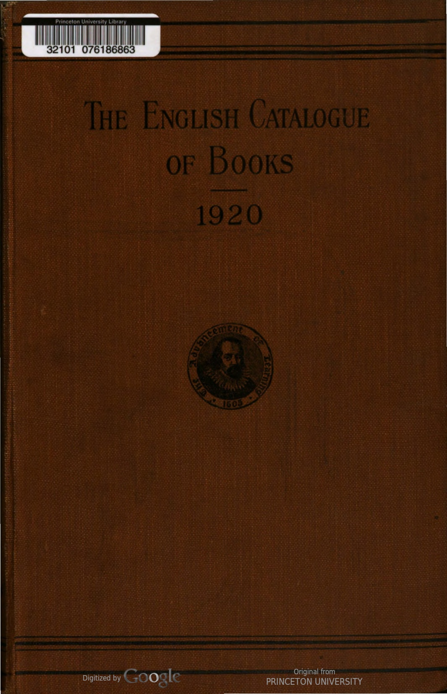
Data Table
| original_entry | page_num | doc_page_num | opening_bits | author(s) | title | format | little_bits | publisher | date | flagged | catalogue_year | |
|---|---|---|---|---|---|---|---|---|---|---|---|---|
| 0 | A was an archer. Illus. by D. Pailthorpe. 4to. swd. 2s. net .HARRAP, Mar. '20 | 1.0 | 9 | NaN | NaN | A was an archer. Illus. by D. Pailthorpe. | 4to. | swd. 2s. net . | HARRAP | Mar. 20 | False | 1920 |
| 1 | A B C universal commercial telegraphic code. Proprietors, E. M. M. Clauson-Thue and F. C. E. Faulkner. 6th ed. Ed. by William Droege. Ryl. 8vo. 94 x 61, pp. 1,542, 40s. net EDEN FISHER, Mar. '20 | 1.0 | 9 | NaN | NaN | A B C universal commercial telegraphic code. Proprietors, E. M. M. Clauson-Thue and F. C. E. Faulkner. 6th ed. Ed. by William Droege. | Ryl. 8vo. | 94 x 61, pp. 1,542, 40s. net | EDEN FISHER | Mar. 20 | False | 1920 |
| 2 | Aaland Islands, Question of the : Reference to the League of Nations. 2d. net H.M.S.O., Aug. '20 | 1.0 | 9 | NaN | NaN | Aaland Islands, Question of the : Reference to the League of Nations. | NaN | 2d. net | H.M. STATIONERY OFF. | Aug. 20 | False | 1920 |
| 3 | Abbay (R., Rev. Our orchards : letters to the East Anglian Daily Times, 1892-1920. With notes. 8vo. 81 x 54, pp. 35, swd. Is. net HARRISON, June'20 | 1.0 | 9 | NaN | Abbay (R., Rev. | Our orchards : letters to the East Anglian Daily Times, 1892-1920. With notes. | 8vo. | 81 x 54, pp. 35, swd. Is. net | HARRISON | June 20 | False | 1920 |
| 4 | Abbott (Anstice) A Girl widow's romance : a tale of Indian life. Forew. by Rev. C. Askwith. Cr. 8vo. 71 X 5, pp. 125, 25. 6d. net R.T.S., Oct. '20 | 1.0 | 9 | NaN | Abbott (Anstice) | A Girl widow's romance : a tale of Indian life. Forew. by Rev. C. Askwith. | Cr. 8vo. | 71 X 5, pp. 125, 25. 6d. net | R.T.S. | Oct. 20 | False | 1920 |
| 5 | Abbott (Claude C.) trans.—Nine songs from the 12th century French. 10 X 6, pp. 16, 25. CHELSEA BOOK CLUB, Aug.'20 | 1.0 | 9 | NaN | Abbott (Claude C.) | trans.—Nine songs from the 12th century French. | NaN | 10 X 6, pp. 16, 25. | CHELSEA BOOK CLUB | Aug. 20 | False | 1920 |
| 6 | Abbott (E. C.) English composition : based on observation and general reading. Cr. 8vo. 71 x 44, pp. 228, 4s. 6d. net BELL, Aug. '20 | 1.0 | 9 | NaN | Abbott (E. C.) | English composition : based on observation and general reading. | Cr. 8vo. | 71 x 44, pp. 228, 4s. 6d. net | BELL | Aug. 20 | False | 1920 |
| 7 | Abbot (E. C.)Scientific history of the world. In 3 parts. Part 1, to 1485. Cr. 8vo. 7.X 44, pp. 415, 4s. 6d. net ..BELL, June'20 | 1.0 | 9 | NaN | Abbot (E. C.) | Scientific history of the world. In 3 parts. Part 1, to 1485. | Cr. 8vo. | 7.X 44, pp. 415, 4s. 6d. net .. | BELL | June 20 | False | 1920 |
| 8 | Abbott (Jane D.)-Happy house. Cr. 8vo. 78. net LIPPINCOTT, Sep. 20 | 1.0 | 9 | NaN | Abbott (Jane D.) | Happy house. | Cr. 8vo. | 78. net | LIPPINCOTT | Sep. 20 | False | 1920 |
| 9 | Abbott (Jane D.)-Larkspur. Illus. by Harriet R. Richards. Cr. 8vo. 7*5, pp. 261, 6s. net LIPPINCOTT, June'20 | 1.0 | 9 | NaN | Abbott (Jane D.) | Larkspur. Illus. by Harriet R. Richards. | Cr. 8vo. | 7*5, pp. 261, 6s. net | LIPPINCOTT | June 20 | False | 1920 |
| 10 | Abbott (Norman)-Let nothing you dismay, and other verses. 18mo. 2s, 6d. net JARROLDS, Sep. '20 | 1.0 | 9 | NaN | Abbott (Norman) | Let nothing you dismay, and other verses. | 18mo. | 2s, 6d. net | JARROLD | Sep. 20 | False | 1920 |
| 11 | Abdul Majid-Malay self-taught by the Natural method, with phonetic pronunciation. Cr. 8vo. 7 X 4, pp. 120, 4s. net, swd. 33. net. (Marl- borough's Self-taught ser.) MARLBOROUGH, July'20 | 1.0 | 9 | NaN | Abdul Majid | Malay self-taught by the Natural method, with phonetic pronunciation. | Cr. 8vo. | 7 X 4, pp. 120, 4s. net, swd. 33. net. (Marl- borough's Self-taught ser.) | MARLBOROUGH | July 20 | False | 1920 |
| 12 | Abott (G. F.)-A Record of Sir John Finch's Embassy, 1674-1681 : under the Turk in Constantinople. With a foreword by Viscount Bryce, O.M. Ryl. 8vo. 97 x6, pp. 433, 18s. net ..MACMILLAN, Oct. '20 | 1.0 | 9 | NaN | Abott (G. F.) | A Record of Sir John Finch's Embassy, 1674-1681 : under the Turk in Constantinople. With a foreword by Viscount Bryce, O.M. | Ryl. 8vo. | 97 x6, pp. 433, 18s. net .. | MACMILLAN | Oct. 20 | False | 1920 |
| 13 | Abrahamian (Abel, Rt. Rev. Dr.)-The Church and faith of Armenia. Pref. by The Lord Bishop of Gloucester. Cr. 8vo. 71 x 5 swd., pp. 75, Is. 6d..... ..FAITH PR., June 20 | 1.0 | 9 | NaN | Abrahamian (Abel, Rt. Rev. Dr.) | The Church and faith of Armenia. Pref. by The Lord Bishop of Gloucester. | Cr. 8vo. | 71 x 5 swd., pp. 75, Is. 6d. | FAITH PR. | June 20 | False | 1920 |
| 14 | Abrahams (Israel) —Poetry and religion. With foreword by Sir Arthur Quiller-Couch. 18mo. 64 X4, pp. 81, 2s, 6d net; swd. is, net ALLEN & U., Oct. '20 | 1.0 | 9 | NaN | Abrahams (Israel) | Poetry and religion. With foreword by Sir Arthur Quiller-Couch. | 18mo. | 64 X4, pp. 81, 2s, 6d net; swd. is, net | ALLEN & U. | Oct. 20 | False | 1920 |
1921
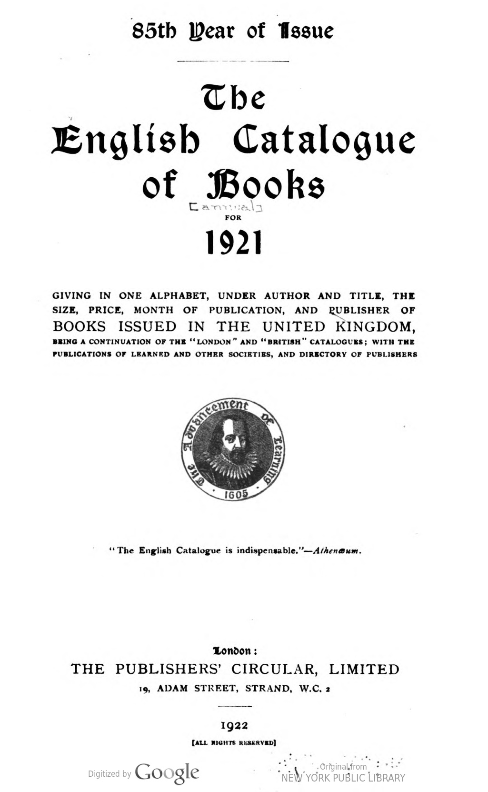
Data Table
| original_entry | page_num | doc_page_num | opening_bits | author(s) | title | format | little_bits | publisher | date | flagged | catalogue_year | |
|---|---|---|---|---|---|---|---|---|---|---|---|---|
| 0 | A B C auction sales record: with full descriptions and prices for the year 1920 of old English silver. Compiled by Alfred J. Abbey. Cr. 8vo. 7×5, pp. 128, 5s. net. .S. PAUL, July '21 | 1.0 | 15.0 | NaN | NaN | A B C auction sales record: with full descriptions and prices for the year 1920 of old English silver. Compiled by Alfred J. Abbey. | Cr. 8vo. | 7×5, pp. 128, 5s. net. . | S. PAUL | July 21 | False | 1921 |
| 1 | A B C guide to the practice of the Supreme Court. 1922. By F. R. P. Stringer. 17th ed. Cr. 8vo. pp. 219, 8s. 6d. net SWEET & M., Nov. '21 | 1.0 | 15.0 | NaN | NaN | A B C guide to the practice of the Supreme Court. 1922. By F. R. P. Stringer. 17th ed. | Cr. 8vo. | pp. 219, 8s. 6d. net | SWEET & M. | Nov. 21 | False | 1921 |
| 2 | A.B.C. motor, marine and aircraft guide, 1921 (The): including a topographical transport directory to 4,670 places in the United King- dom. Compiled by W. C. Bersey and A. Dorey. 4to. 8×7, pp. 526, 7s. 6d. net TECHNICAL PUBG. CO., Aug. '21 | 1.0 | 15.0 | NaN | NaN | A.B.C. motor, marine and aircraft guide, 1921 (The): including a topographical transport directory to 4,670 places in the United King- dom. Compiled by W. C. Bersey and A. Dorey. | 4to. | 8×7, pp. 526, 7s. 6d. net | TECHNICAL PUBG. CO. | Aug. 21 | False | 1921 |
| 3 | "A.L." Challenge test cards (The). Grade 2. Containing: (a) Mechanical sums; (b) Three sets of tests; (c) Syllabus card; (d) Two sets of answers. Cr. 8vo. 6× 5, ppr. packet, 3s.net.. .E. J. ARNOLD, Feb. '21 | 1.0 | 15.0 | NaN | NaN | "A.L." Challenge test cards (The). Grade 2. Containing: (a) Mechanical sums; (b) Three sets of tests; (c) Syllabus card; (d) Two sets of answers. | Cr. 8vo. | 6× 5, ppr. packet, 3s.net.. | E. ARNOLD | Feb. 21 | False | 1921 |
| 4 | "A. L." Challenge test cards (The). Grade 3. Containing: (a) Mechanical sums; (b) Three sets of tests; (c) Syllabus card; (d) Two sets of answers. Cr. 8vo. 6x 5, cards swd. 3s. net E. J. ARNOLD, Mar. '21 | 1.0 | 15.0 | NaN | "A. L." | Challenge test cards (The). Grade 3. Containing: (a) Mechanical sums; (b) Three sets of tests; (c) Syllabus card; (d) Two sets of answers. | Cr. 8vo. | 6x 5, cards swd. 3s. net | E. ARNOLD | Mar. 21 | False | 1921 |
| 5 | "A. L." Challenge test cards (The). Grade 5. Cr. 8vo. 61× 5, swd. 3s. net packet E. J. ARNOLD, May '21 | 1.0 | 15.0 | NaN | A. L. | Challenge test cards (The). Grade 5. | Cr. 8vo. | 61× 5, swd. 3s. net packet | E. ARNOLD | May 21 | False | 1921 |
| 6 | "A. L." Challenge test cards (The). Grade 7. Cr. 8vo. 61×4, per swd. packet 3s. net E. J. ARNOLD, Oct. '21 | 1.0 | 15.0 | NaN | A. L. | Challenge test cards (The). Grade 7. | Cr. 8vo. | 61×4, per swd. packet 3s. net | E. ARNOLD | Oct. 21 | False | 1921 |
| 7 | "A.L." County cookery book (The). Compiled by a County Education Secretary and Domestic Subjects Staff. Cr. 8vo. 7×51, pp. 111, swd. Is. 3d. net... . . . . . . . . . ....E. J. ARNOLD, Mar. '21 | 1.0 | 15.0 | NaN | A.L. | County cookery book (The). Compiled by a County Education Secretary and Domestic Subjects Staff. | Cr. 8vo. | 7×51, pp. 111, swd. Is. 3d. net... | E. ARNOLD | Mar. 21 | False | 1921 |
| 8 | "A. L." Geography work-book of the British Isles. Roy. 8vo. 91×71, pp. 24, swd. Is. net ('A L'Geographical ser.)....E. J. ARNOLD, May 21 | 1.0 | 15.0 | NaN | A. L. | Geography work-book of the British Isles. | Roy. 8vo. | 91×71, pp. 24, swd. Is. net ('A L'Geographical ser.).... | E. ARNOLD | May 21 | False | 1921 |
| 9 | "A.L." Nature note book and garden diary (The). 8vo. 8×61, pp. 70, swd. Is. 9d. net E. J. ARNOLD, Feb. '21 | 1.0 | 15.0 | NaN | A.L. | Nature note book and garden diary (The). | 8vo. | 8×61, pp. 70, swd. Is. 9d. net | E. ARNOLD | Feb. 21 | False | 1921 |
| 10 | "A.L." Print writing copy books (The). 8vo. 61×8, pp. 24, swd. 4d. net E. J. ARNOLD, Jan., May ’21 | 1.0 | 15.0 | NaN | “A.L.” | Print writing copy books (The). | 8vo. | 61×8, pp. 24, swd. 4d. net | E. ARNOLD | Jan., May 21 | False | 1921 |
| 11 | A.L.O.E.-The Lost jewel. Illus. by H. E. Butler. Cr. 8vo. 7×41, pp. 200, Is. 6d. net COLLINS, Sep. '21 | 1.0 | 15.0 | NaN | A.L.O.E. | The Lost jewel. Illus. by H. E. Butler. | Cr. 8vo. | 7×41, pp. 200, Is. 6d. net | COLLINS | Sep. 21 | False | 1921 |
| 12 | Aaron (Charles D.)-Diseases of the digestive organs. 3rd ed., rev. Ryl. 8vo. pp. 904, 50s. net LEWIS, Nov. '21 | 1.0 | 15.0 | NaN | Aaron (Charles D.) | Diseases of the digestive organs. 3rd ed., rev. | Ryl. 8vo. | pp. 904, 50s. net | LEWIS | Nov. 21 | False | 1921 |
| 13 | Abbott (Claude Colleer)-Poems. Cr. 8vo. 7 × 58. pp. 69, 5s. net…….. .BLACKWELL, Sep. '21 | 1.0 | 15.0 | NaN | Abbott (Claude Colleer) | Poems. | Cr. 8vo. | 7 × 58. pp. 69, 5s. net…….. . | BLACKWELL | Sep. 21 | False | 1921 |
| 14 | Abbott (Jane)-Aprilly. Cr. 8vo. pp. 287, 7s. 6d. net LIPPINCOTT, Dec. '21 | 1.0 | 15.0 | NaN | Abbott (Jane) | Aprilly. | Cr. 8vo. | pp. 287, 7s. 6d. net | LIPPINCOTT | Dec. 21 | False | 1921 |
1922
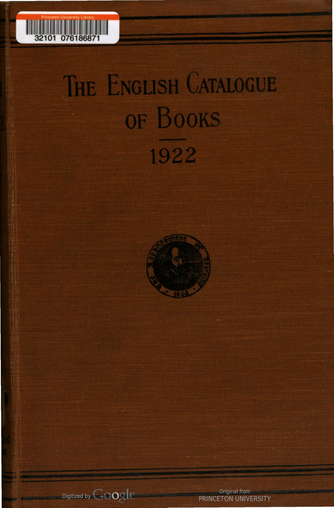
Data Table
| original_entry | page_num | doc_page_num | opening_bits | author(s) | title | format | little_bits | publisher | date | flagged | catalogue_year | |
|---|---|---|---|---|---|---|---|---|---|---|---|---|
| 0 | A B C guide to the practice of the Supreme Court, 1923. By F. R. S. Stringer. 18th ed. 71 x 5, pp. 239, 8s. 6d. net. SWEET & M., Oct. '22 | 1 | 9.0 | NaN | NaN | A B C guide to the practice of the Supreme Court, 1923. By F. R. S. Stringer. 18th ed. | NaN | 71 x 5, pp. 239, 8s. 6d. net. | SWEET & M. | Oct. 22 | False | 1922 |
| 1 | A B C or alphabetical railway guide. (Monthly.) ea. swd. 28. net. (15, Fetter Lane, E.C.) OFFICE, Jan., etc., '22 | 1 | 9.0 | NaN | NaN | A B C or alphabetical railway guide. | NaN | (Monthly.) ea. swd. 28. net. (15, Fetter Lane, E.C.) | OFFICE | Jan. 22 | False | 1922 |
| 2 | A. E. See E. (A.) Aaland Islands : Convention respecting non- fortification and neutralisation, Geneva, Oct., 1921. 6d. net........ ...H.M.S.O., June '22 | 1 | 9.0 | A. E. See E. (A.) | NaN | Aaland Islands : Convention respecting non- fortification and neutralisation, Geneva, Oct., 1921. | NaN | 6d. net........ ... | H.M. STATIONERY OFF. | June 22 | False | 1922 |
| 3 | Abbott (G. F.)—Greece and the Allies, 1914–1922. Cr. 8vo, 74 x 5, pp. 253, 78. 6d. net. METHUEN, Dec. '22 | 1 | 9.0 | NaN | Abbott (G. F.) | Greece and the Allies, 1914–1922. | Cr. 8vo | 74 x 5, pp. 253, 78. 6d. net. | METHUEN | Dec. 22 | False | 1922 |
| 4 | Abbott_(Jane)-Red-Robin. Illus. by Harriet R. Richards. 2nd imp. Cr. 8vo, 78 x 5, pp. 327, 75. 6d. net......LIPPINCOTT, Dec. '22 | 1 | 9.0 | NaN | Abbott_(Jane) | Red-Robin. Illus. by Harriet R. Richards. 2nd imp. | Cr. 8vo | 78 x 5, pp. 327, 75. 6d. net...... | LIPPINCOTT | Dec. 22 | False | 1922 |
| 5 | Abbott (Lyman)-Silhouettes of my contempor- aries. 8vo. 81 x 51, pp. 361, I2s. 6d. net ALLEN & U., May '22 | 1 | 9.0 | NaN | Abbott (Lyman) | Silhouettes of my contempor- aries. | 8vo. | 81 x 51, pp. 361, I2s. 6d. net | ALLEN & U. | May 22 | False | 1922 |
| 6 | Abbott (T. K.) and Gwynn (E. W.)–Catalogue of the Irish manuscripts in the library of Trinity College, Dublin. 81x6, pp. 465, 215. net (Hodges, Figgis) LONGMANS, Apr. '22 | 1 | 9.0 | NaN | Abbott (T. K.) and Gwynn (E. W.) | Catalogue of the Irish manuscripts in the library of Trinity College, Dublin. | NaN | 81x6, pp. 465, 215. net (Hodges, Figgis) | LONGMANS | Apr. 22 | False | 1922 |
| 7 | Abbott-Smith (G.) A Manual Greek lexicon of the New Testament. 9 X 6, pp. 528. 218. net T. & T. CLARK, Mar.'22 | 1 | 9.0 | NaN | Abbott-Smith (G.) | A Manual Greek lexicon of the New Testament. | NaN | 9 X 6, pp. 528. 218. net | T. & T. CLARK | Mar. 22 | False | 1922 |
| 8 | Abdullah (Achmed)—Night drums. Cr. 8vo. 74 x 5, pp. 287, 78. 6d net .. HUTCHINSON, May'22 | 1 | 9.0 | NaN | Abdullah (Achmed) | Night drums. | Cr. 8vo. | 74 x 5, pp. 287, 78. 6d net .. | HUTCHINSON | May 22 | False | 1922 |
| 9 | Abercrombie (Lascelles)-An Essay towards a theory of art. Cr. 8vo. 7 x 5, pp. 115, 58. net M. SECKER, June '22 | 1 | 9.0 | NaN | Abercrombie (Lascelles) | An Essay towards a theory of art. | Cr. 8vo. | 7 x 5, pp. 115, 58. net | M. SECKER | June 22 | False | 1922 |
| 10 | Abercrombie (Lascelles)—Four short plays. Cr. 8vo. 7* X 51, PP, 176. 6s. net. M. SECKER, July '22 | 1 | 9.0 | NaN | Abercrombie (Lascelles) | Four short plays. | Cr. 8vo. | 7* X 51, PP, 176. 6s. net. | M. SECKER | July 22 | False | 1922 |
| 11 | Abercrombie (Patrick) and Johnson (T. H.)—The Doncaster regional planning scheme : the report prepared for the Joint Committee. 4to, pp. 93, swd. ros, net.... HODDER & S., Dec. '22 | 1 | 9.0 | NaN | Abercrombie (Patrick) and Johnson (T. H.) | The Doncaster regional planning scheme : the report prepared for the Joint Committee. | 4to, | pp. 93, swd. ros, net.... | HODDER & S. | Dec. 22 | False | 1922 |
| 12 | Abhinava Gupta-Malinivijaya Varttikam. Ed. in Sanskrit with notes by Madhusudan Kaul. 8vo., pp. 138, 6s. 6d., 78. 6d. (Kashmir ser. of texts and studies) LUZAC; PROBSTHAIN, Mar. '22 | 1 | 9.0 | NaN | Abhinava Gupta | Malinivijaya Varttikam. Ed. in Sanskrit with notes by Madhusudan Kaul. | 8vo. | pp. 138, 6s. 6d., 78. 6d. (Kashmir ser. of texts and studies) | LUZAC; PROBSTHAIN | Mar. 22 | False | 1922 |
| 13 | Abhinava Gupta-The Tantraloka. With com- mentary by Rajanaka Jayaratha. Ed. in Sanskrit with notes by Madhusudan Kaul. Vols. 2-3. 8vo. Vol. 2, 6s. 6d., 78. 6d. ; Vol. 3, ros. 6d., 125. (Kashmir ser. of texts and studies) LUZAC; PROBSTHAIN, Mar.'22 | 1 | 9.0 | NaN | Abhinava Gupta | The Tantraloka. With com- mentary by Rajanaka Jayaratha. Ed. in Sanskrit with notes by Madhusudan Kaul. Vols. 2-3. | 8vo. | Vol. 2, 6s. 6d., 78. 6d. ; Vol. 3, ros. 6d., 125. (Kashmir ser. of texts and studies) | LUZAC; PROBSTHAIN | Mar. 22 | False | 1922 |
| 14 | Abraham (George D.)--Swiss mountain climbs. Cheaper ed. Cr. 8vo. 7X 44, pp. 447, 75. 6d. net. MILLS & B., July '22 | 1 | 9.0 | NaN | Abraham (George D.) | Swiss mountain climbs. Cheaper ed. | Cr. 8vo. | 7X 44, pp. 447, 75. 6d. net. | MILLS & B. | July 22 | False | 1922 |
Entries Captured by Our Dataframes
This visualization shows how many catalogue entries we captured in our data relative to how many total entries were listed in each issue.
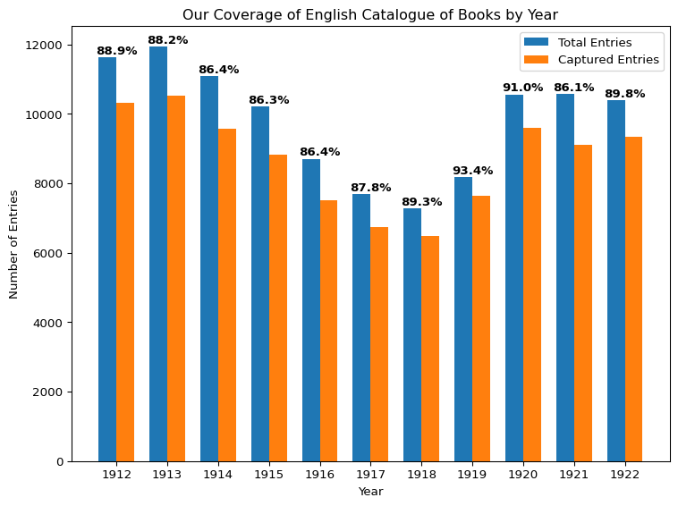